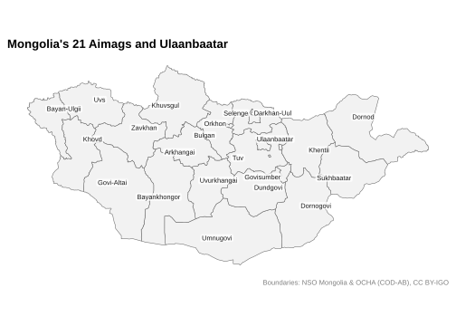
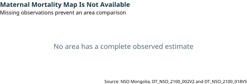
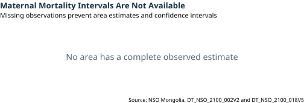
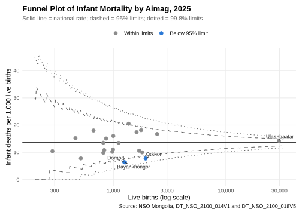
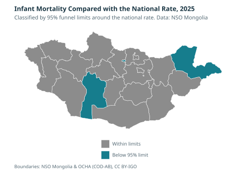

library(mongolstats)
library(mongolmaps)
library(dplyr)
library(ggplot2)
# Checked teaching helpers are shipped with the package and can be inspected.
source(system.file("examples", "analysis-helpers.R", package = "mongolstats"), local = TRUE)
source(system.file("examples", "plot-style.R", package = "mongolstats"), local = TRUE)Overview
Geographic analysis helps find health disparities and target interventions. This guide maps two aimag-level indicators, maternal and infant mortality, and shows the steps that keep such maps honest: checking the counts, pooling small numbers, showing uncertainty, and comparing areas with a funnel plot rather than fixed colour bands.
Getting Boundary Data
mongolmaps ships boundaries for every administrative level. Each unit carries its NSO code, so tables from mongolstats join by code rather than by name.
aimags <- mn_aimags() # 21 aimags and Ulaanbaatar
aimags |>
sf::st_drop_geometry() |>
select(name, nso_code, iso_code, area_km2) |>
head()
#> # A tibble: 6 × 4
#> name nso_code iso_code area_km2
#> <chr> <chr> <chr> <dbl>
#> 1 Ulaanbaatar 511 MN-1 4736.
#> 2 Dornod 421 MN-061 123523.
#> 3 Sukhbaatar 422 MN-051 82321.
#> 4 Khentii 423 MN-039 80743.
#> 5 Tuv 341 MN-047 73986.
#> 6 Govisumber 342 MN-064 5540.
mn_map(aimags, label = TRUE, title = "Mongolia's 21 Aimags and Ulaanbaatar") +
analysis_map_theme()
Other levels work the same way: mn_regions(),
mn_soums(), mn_ub_districts() and
mn_khoroos(). (mongolstats’ own geoBoundaries helpers,
mn_boundaries() and the name-based joins, are deprecated in
favour of mongolmaps.)
Region codes in NSO tables
NSO’s Region dimension mixes levels: "0" is
the national total, "1"–"4" are the four
economic regions, "5" is Ulaanbaatar as a region, and
three-digit codes are aimags. mn_join() keeps the aimag
level and drops the rest. Many health tables store Ulaanbaatar’s figures
only under the region code "5" and leave its aimag-level
code "511" empty; mn_join() notices this and
takes the capital’s values from the region row, with a message, so no
recoding is needed.
Case Study: Maternal Mortality
Maternal deaths are rare: Mongolia records a few dozen a year, and most aimags record none in a typical year. A single year’s maternal mortality ratio (MMR) by aimag can be very unstable. We pool up to 10 common calendar years, retain incomplete counts as missing, and attach conditional Poisson intervals. A maternal death is a death during pregnancy or within 42 days of its end from a cause related to or aggravated by pregnancy or its management, excluding accidental or incidental causes. Confirm that the source applies this definition. MMR uses live births as its denominator; it is different from maternal mortality per woman-years.
Check the counts before mapping
Aimag codes start with their region’s digit (1xx =
Western, 2xx = Khangai, 3xx = Central,
4xx = Eastern), so aimag counts should add up to their
regional subtotal. Reconciliation detects inconsistencies, but cannot
identify which source entry is wrong.
# Report both inconsistent and uncheckable subtotals. Never infer zero.
subtotal_mismatches <- function(data) {
analysis_keys(data, c("Region", "period"))
aimag_sums <- data |>
filter(nchar(Region) == 3, Region != "511") |>
mutate(region = substr(Region, 1, 1)) |>
summarise(aimag_sum = analysis_sum(value), .by = c(region, period))
region_totals <- data |>
filter(Region %in% as.character(1:4)) |>
select(region = Region, period, region_total = value)
full_join(aimag_sums, region_totals, by = join_by(region, period), relationship = "one-to-one") |>
mutate(check = case_when(
!is.finite(aimag_sum) | !is.finite(region_total) ~ "Uncheckable",
aimag_sum != region_total ~ "Needs review",
.default = "Agrees"
)) |>
filter(check != "Agrees")
}
annual_tbl <- "DT_NSO_2100_002V1"
monthly_tbl <- "DT_NSO_2100_002V2"
maternal_annual <- nso_data(annual_tbl, list(
Region = nso_dim_values(annual_tbl, "Region")$code,
Year = nso_dim_values(annual_tbl, "Year", labels = "en")$label_en
), labels = "en") |> mutate(period = Year_en)
maternal_monthly <- nso_data(monthly_tbl, list(
Region = nso_dim_values(monthly_tbl, "Region")$code,
Month = nso_table_periods(monthly_tbl)$label
), labels = "en") |> mutate(period = Month_en)
annual_checks <- subtotal_mismatches(maternal_annual)
monthly_checks <- subtotal_mismatches(maternal_monthly)
count(annual_checks, check)
#> # A tibble: 2 × 2
#> check n
#> <chr> <int>
#> 1 Needs review 1
#> 2 Uncheckable 51
count(monthly_checks, check)
#> # A tibble: 1 × 2
#> check n
#> <chr> <int>
#> 1 Uncheckable 76
filter(annual_checks, check == "Needs review")
#> # A tibble: 1 × 5
#> region period aimag_sum region_total check
#> <chr> <chr> <dbl> <dbl> <chr>
#> 1 4 2017 22 2 Needs reviewAn aimag sum larger than its regional total indicates a source inconsistency, not which entry is incorrect. Missing totals or component observations are labelled uncheckable. The monthly source is used provisionally below; national reconciliation cannot establish the meaning of every blank cell. Record unresolved discrepancies for follow-up with NSO before publication.
Pooled maternal mortality ratio
The MMR divides maternal deaths by live births
(DT_NSO_2100_018V5) over the same common calendar years. A
pooled result is a birth-weighted summary of the selected period, not an
estimate of current-year risk.
units <- c("0", setdiff(mn_aimags()$nso_code, "511"), "5")
maternal_source <- analysis_fetch_counts(monthly_tbl, units)
birth_source <- analysis_fetch_counts("DT_NSO_2100_018V5", units)
complete_years <- analysis_common_years(maternal_source$annual, birth_source$annual)
stopifnot(length(complete_years) > 0L)
mmr_years <- tail(complete_years, 10L)
mmr_period <- paste(range(mmr_years), collapse = "-")
maternal_deaths <- analysis_pool_counts(maternal_source$annual, mmr_years)
live_births <- analysis_pool_counts(birth_source$annual, mmr_years)
mmr <- analysis_pair(
select(maternal_deaths, Region, Region_en, deaths = count, missing_deaths = n_missing),
select(live_births, Region, births = count, missing_births = n_missing), "Region"
)
mmr <- bind_cols(mmr, analysis_poisson(mmr$deaths, mmr$births, 1e5)) |>
rename(mmr = rate) |>
mutate(Region_en = trimws(Region_en))
national_mmr <- filter(mmr, Region == "0")
stopifnot(nrow(national_mmr) == 1L, is.finite(national_mmr$mmr))
mmr_units <- filter(mmr, Region != "0")
stopifnot(nrow(mmr_units) == 22L)
mmr_units |>
transmute(
area = Region_en, deaths, births,
missing_months = paste(missing_deaths, missing_births, sep = " / "),
estimate = if_else(is.finite(mmr), sprintf("%.1f (%.1f–%.1f)", mmr, lower, upper), "Insufficient data")
) |>
knitr::kable(
col.names = c("Area", "Maternal deaths", "Live births", "Missing months: deaths / births", "MMR per 100,000 (95% CI)"),
digits = 0, format.args = list(big.mark = ",")
)| Area | Maternal deaths | Live births | Missing months: deaths / births | MMR per 100,000 (95% CI) |
|---|---|---|---|---|
| Dornod | Not reported | 17,398 | 10 / 0 | Insufficient data |
| Sukhbaatar | Not reported | 11,948 | 8 / 0 | Insufficient data |
| Khentii | Not reported | 13,820 | 10 / 0 | Insufficient data |
| Tuv | Not reported | 9,873 | 20 / 0 | Insufficient data |
| Govisumber | Not reported | 4,012 | 11 / 0 | Insufficient data |
| Selenge | Not reported | 15,059 | 16 / 0 | Insufficient data |
| Dornogovi | Not reported | 12,603 | 9 / 0 | Insufficient data |
| Darkhan-Uul | Not reported | 21,621 | 9 / 0 | Insufficient data |
| Umnugovi | Not reported | 14,194 | 20 / 0 | Insufficient data |
| Dundgovi | Not reported | 7,884 | 12 / 0 | Insufficient data |
| Orkhon | Not reported | 24,167 | 10 / 0 | Insufficient data |
| Uvurkhangai | Not reported | 22,030 | 11 / 0 | Insufficient data |
| Bulgan | Not reported | 7,068 | 22 / 0 | Insufficient data |
| Bayankhongor | Not reported | 18,033 | 10 / 0 | Insufficient data |
| Arkhangai | Not reported | 15,327 | 11 / 0 | Insufficient data |
| Khuvsgul | Not reported | 24,983 | 15 / 0 | Insufficient data |
| Zavkhan | Not reported | 12,227 | 9 / 0 | Insufficient data |
| Govi-Altai | Not reported | 11,454 | 9 / 0 | Insufficient data |
| Bayan-Ulgii | Not reported | 27,847 | 9 / 0 | Insufficient data |
| Khovd | Not reported | 20,452 | 10 / 0 | Insufficient data |
| Uvs | Not reported | 18,197 | 19 / 0 | Insufficient data |
| Ulaanbaatar | Not reported | 367,781 | 5 / 0 | Insufficient data |
# Sensitivity: remove the pandemic years; use the same validation rules.
sensitivity_years <- setdiff(mmr_years, as.character(2020:2022))
stopifnot(length(sensitivity_years) > 0L)
sensitivity <- analysis_pair(
select(analysis_pool_counts(maternal_source$annual, sensitivity_years), Region, deaths = count),
select(analysis_pool_counts(birth_source$annual, sensitivity_years), Region, births = count), "Region"
) |> mutate(mmr = if_else(is.finite(deaths) & births > 0, deaths / births * 1e5, NA_real_))
filter(sensitivity, Region == "0") |>
transmute(Period = paste(range(sensitivity_years), collapse = "–"), `National MMR per 100,000` = mmr) |>
knitr::kable(digits = 1, caption = "National estimate excluding pandemic years")| Period | National MMR per 100,000 |
|---|---|
| 2016–2025 | 29.7 |
Unresolved source values are not converted to zero. 22 areas have
insufficient observations for the pooled estimate and appear grey on the
map. Inspect maternal_source$status and
birth_source$status before considering any table-specific
recode. Conditional Poisson intervals do not include registration error,
geographic mismatch or denominator uncertainty.
Over 2016-2025, the national recorded MMR was 37 per 100,000 live births. The national estimate excluding 2020-2022 is shown above. Pooling can reduce random variation but cannot repair missing observations or systematic error.
Choropleth and confidence intervals
mmr_map <- mn_join(mmr_units, by = "Region", level = "aimag")
stopifnot(nrow(mmr_map) == 22L, !anyDuplicated(mmr_map$nso_code))
if (!any(is.finite(mmr_units$mmr))) {
ggplot() +
annotate("text", x = 0, y = 0, label = "No area has a complete observed estimate", size = 5, color = "#536873") +
labs(
title = "Maternal Mortality Map Is Not Available",
subtitle = "Missing observations prevent an area comparison",
caption = "Source: NSO Mongolia, DT_NSO_2100_002V2 and DT_NSO_2100_018V5"
) +
theme_void() +
theme(plot.title = element_text(face = "bold", color = "#183442"))
} else {
mn_map(mmr_map, fill = mmr, title = paste0("Maternal Mortality Ratio, ", mmr_period)) +
labs(
subtitle = "Per 100,000 live births; grey = insufficient data",
fill = "MMR\n(per 100k)",
caption = "Pooled recorded counts | Source: NSO Mongolia"
) +
guides(fill = guide_colourbar(barwidth = grid::unit(85, "mm"), barheight = grid::unit(3, "mm"))) +
analysis_map_theme()
}
A map shows point estimates only. The interval plot shows how uncertain each one is:
if (!any(is.finite(mmr_units$mmr))) {
ggplot() +
annotate("text", x = 0, y = 0, label = "No area has a complete observed estimate", size = 5, color = "#536873") +
labs(
title = "Maternal Mortality Intervals Are Not Available",
subtitle = "Missing observations prevent area estimates and confidence intervals",
caption = "Source: NSO Mongolia, DT_NSO_2100_002V2 and DT_NSO_2100_018V5"
) +
theme_void() +
theme(plot.title = element_text(face = "bold", color = "#183442"))
} else {
mmr_units |>
filter(is.finite(mmr)) |>
mutate(Region_en = forcats::fct_reorder(Region_en, mmr)) |>
ggplot(aes(x = mmr, y = Region_en)) +
geom_vline(xintercept = national_mmr$mmr, linetype = "dashed", color = "grey50") +
geom_errorbar(aes(xmin = lower, xmax = upper), width = 0.3, color = "grey60", orientation = "y") +
geom_point(color = "#A94438", size = 2.5) +
labs(
title = paste0("Maternal Mortality Ratio by Aimag, ", mmr_period),
subtitle = "Per 100,000 live births, with exact 95% CIs; dashed line = national ratio",
x = "Maternal deaths per 100,000 live births",
y = NULL,
caption = "Source: NSO Mongolia, DT_NSO_2100_002V2 and DT_NSO_2100_018V5"
) +
theme(panel.grid.major.y = element_blank(), panel.grid.minor = element_blank())
}
Intervals can remain wide after pooling. Zero observed maternal deaths has a positive upper Poisson limit and is not evidence of zero risk. Missing data is a different state and is not shown as zero. Compare the pandemic-excluded result before describing a pooled pattern as typical.
Case Study: Infant Mortality
Funnel plot
A funnel plot places each area’s recorded IMR against its number of births. Conservative discrete Poisson limits are wider for smaller denominators. A point outside the limits is unusual under a common-rate Poisson model, not proof that the difference cannot be due to chance or that care is worse. Unmeasured heterogeneity, referral, data quality and overdispersion can affect the interpretation.
infant_source <- analysis_fetch_counts("DT_NSO_2100_014V1", units)
imr_year <- analysis_latest(analysis_common_years(infant_source$annual, birth_source$annual))
infant_deaths <- filter(infant_source$annual, year == imr_year)
imr_births <- filter(birth_source$annual, year == imr_year)
imr <- analysis_pair(
select(infant_deaths, Region, Region_en, deaths = count),
select(imr_births, Region, births = count), "Region"
) |> mutate(Region_en = trimws(Region_en))
imr <- bind_cols(imr, analysis_poisson(imr$deaths, imr$births)) |> rename(imr = rate)
national_rate <- with(filter(imr, Region == "0"), deaths / births)
stopifnot(length(national_rate) == 1L, is.finite(national_rate), national_rate > 0)
# Discrete quantiles give conservative attainable tail probabilities.
# Step-shaped limits are expected; no interpolation is used for classification.
funnel_limit <- function(births, p) qpois(p, births * national_rate) / births * 1000
imr_units <- filter(imr, Region != "0") |>
mutate(signal = analysis_funnel_signal(deaths, births, national_rate))
count(imr_units, signal)
#> # A tibble: 2 × 2
#> signal n
#> <fct> <int>
#> 1 Within limits 19
#> 2 Below 95% limit 3
funnel <- tibble::tibble(births = exp(seq(log(200), log(max(imr_units$births) * 1.1), length.out = 300))) |>
mutate(
lower_998 = funnel_limit(births, 0.001), upper_998 = funnel_limit(births, 0.999),
lower_95 = funnel_limit(births, 0.025), upper_95 = funnel_limit(births, 0.975)
)
signal_colors <- c("Above 95% limit" = "#C2623D", "Within limits" = "grey55", "Below 95% limit" = "#167D8D", "Insufficient data" = "grey85")
ggplot(filter(imr_units, is.finite(imr), births > 0), aes(x = births, y = imr)) +
geom_line(data = funnel, aes(y = upper_998), linetype = "dotted", color = "grey40") +
geom_line(data = funnel, aes(y = lower_998), linetype = "dotted", color = "grey40") +
geom_line(data = funnel, aes(y = upper_95), linetype = "dashed", color = "grey40") +
geom_line(data = funnel, aes(y = lower_95), linetype = "dashed", color = "grey40") +
geom_hline(yintercept = national_rate * 1000, color = "grey20") +
geom_point(aes(color = signal), size = 2.5) +
ggrepel::geom_text_repel(
data = filter(imr_units, is.finite(imr), signal != "Within limits" | Region == "5"),
aes(label = Region_en), size = 3, color = "grey20", min.segment.length = 0, seed = 1
) +
scale_x_log10(labels = scales::label_comma()) +
scale_y_continuous(limits = c(0, NA)) +
scale_color_manual(values = signal_colors, name = NULL) +
guides(color = guide_legend(ncol = 1)) +
labs(
title = paste0("Funnel Plot of Infant Mortality by Aimag, ", imr_year),
subtitle = "Solid line = national rate; dashed = 95% limits; dotted = 99.8% limits",
x = "Live births (log scale)",
y = "Infant deaths per 1,000 live births",
caption = "Source: NSO Mongolia, DT_NSO_2100_014V1 and DT_NSO_2100_018V5"
) +
theme(legend.position = "top", panel.grid.minor = element_blank())
Mapping the signals
imr_map <- mn_join(imr_units, by = "Region", level = "aimag")
stopifnot(nrow(imr_map) == 22L, !anyDuplicated(imr_map$nso_code))
mn_map(imr_map, fill = signal, title = paste0("Infant Mortality Compared with the National Rate, ", imr_year)) +
scale_fill_manual(values = signal_colors, na.value = "grey90", name = NULL) +
labs(subtitle = "Classified by 95% funnel limits around the national rate. Data: NSO Mongolia") +
analysis_map_theme() +
guides(fill = guide_legend(ncol = 1))
With 22 units, roughly one flag at 95% would be expected under an ideal common-rate model; discrete limits can be conservative, and the estimated national reference includes each area. The 99.8% limits are a stricter screen, not a blanket multiple-comparison correction. A signal warrants investigation of source definitions, quality, referral and other differences. If births and deaths are assigned by occurrence rather than residence, referrals may distort area comparisons; that assignment rule must be confirmed for these tables.
Tips for Spatial Epidemiology
- Check the counts first: Make sure aimags add up to regional and national totals before you pool or map.
- Build rates from counts: Sum numerators and denominators over the period, then divide. Do not average monthly or annual rates.
- Pool rare events: Combine several years for rare outcomes such as maternal deaths.
- Show uncertainty: Pair every choropleth with confidence intervals or a funnel plot.
- State the screening model: Funnel plots reflect denominator size under a stated model; inspect heterogeneity and missing data before interpreting flags.
-
Join by code:
mongolmaps::mn_join()matches NSORegioncodes, so spelling differences cannot drop an aimag from the map.
Next Steps
- Discover Health Data: Return to the Discovery Guide
- Learn More: Explore all functions in the Reference